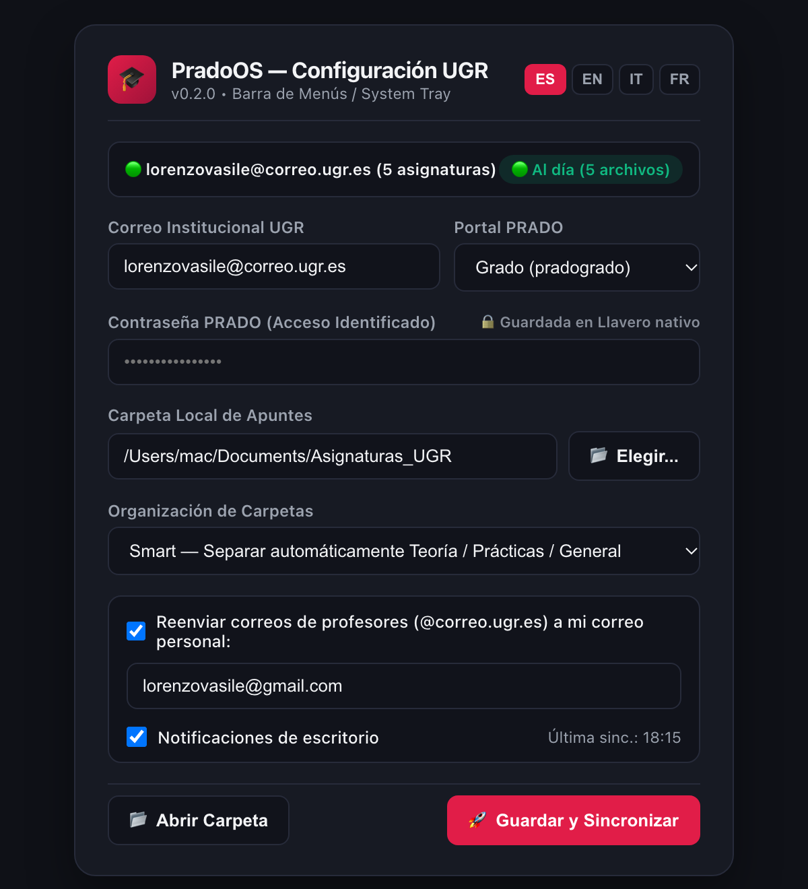

Olvídate de entrar cada día a PRADO a descargar PDFs uno por uno o revisar cuándo vence una práctica. PradoOS vive en tu Barra de Menús (Mac) o Bandeja del Sistema (Windows) y lo hace todo en segundo plano.

No necesitas instalar Python, ni Git, ni abrir ninguna consola.
@correo.ugr.es, tu contraseña (guardada en el Llavero seguro de tu sistema) y elige en qué carpeta quieres tus apuntes.
.ipynb, código .cpp o un PDF y el profesor sube otra versión, tu archivo queda protegido por hash SHA-256.@correo.ugr.es a tu correo personal.deadlines.ics).
Al ser software libre gratuito sin cuota de certificado comercial de Apple/Microsoft, la primera vez que abras PradoOS.app en Mac haz Clic Derecho ➔ Abrir (o ejecuta el comando de abajo, que instala automáticamente PradoOS.app en tu carpeta Aplicaciones y en el Menú Inicio de Windows sin avisos):
curl -fsSL https://raw.githubusercontent.com/LorSt4r/prado-os/main/install.sh | bash
irm https://raw.githubusercontent.com/LorSt4r/prado-os/main/install.ps1 | iex